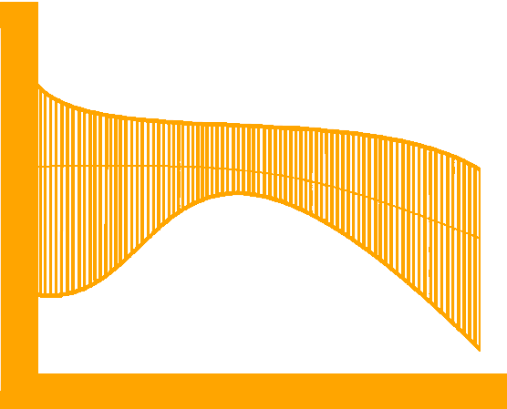

Hello! I’m a Master’s student in Machine Learning at the University of Tübingen, supported by the ELIZA fellowship.
I am interested in fairness and uncertainty in machine learning, particularly in their applications in neuro and cognitive sciences.
Currently, as a part of METU ImageLab and
Cambridge AFAR, I work on methods of fairness
and bias mitigation for multimodal models of computational neuroscience.
Previously, I worked with Professor Barbaros Yet
on multi-agent Bayesian models of human-AI interaction in medical decision-making (using Bayesian Theory of Mind).
Before that, I was a participant in
Teknofest's 2024 international AI competition under the supervision of Professor Ilkay Ulusoy.
Research Interests
CogSci
How does our brain work?
ProbProg
Exploring machines that learn and infer probabilistically.
AI Fairness
Designing models of unbiased decisions for everyone.

AI Uncertainty
Handling uncertainty for transparent AI decisions.
CGPA 3.91/4.00 -- First Rank between the students of the same batch.
Graduate Coursework: Probability Theory, Probabilistic Programming, Probabilistic Models of Cognition, Deep Learning (year long), Computational Semantics and Syntax (year long)
Graduated with a total of 367 ECTS Credits.
Research (Undergraduate Researcher)
Multimodal Fairness in Computaitonal Neuroscience (Advisor: Sinan Kalkan, Jiaee Cheong)
Feb 2024 - Present
Joint work between Cambridge Affective Intelligence and Robotics Lab (AFAR) and METU ImageLab.
In this project, we worked on deep learning-based fairness in classification tasks, utilizing multimodal neurological data.
We analyzed the effects of supervised vs self-supervised learning methods using statistical measures such as variance and covariance on fairness.
▶ Keywords: AI Fairness, Affective Computing, Deep Learning
Human-AI Interaction in Medical Shared Decision-Making (Advisor: Barbaros Yet)
In this project, we worked on a model of Medical Shared Decision Making based on Bayesian decision theory.
The focus was to build a comprehensive model of two-way doctor-patient conversations in a case study on antibiotic
prescriptions. We modeled the language strategies employed by patients and the doctors as a language game, consisting of
various utilities, costs, and rewards.
▶ Keywords: Bayesian Decision-Theory, Shared Decision Making, Human-AI interaction
Alzheimer's Diagnosis System (Advisor: İlkay Ulusoy)
July 2023 - Jan 2024
○ As the data analysis team leader, I designed and oversaw the preprocessing and segmentation process of magnetic resonance neurological datasets.
○ In addition, I utilized Dynamic Bayesian Networks developed from fMRI data to to compare Alzheimer's vs Normal Brain region connectivity.
○ I also worked on Gaussian mixture models, to cluster the Inter-Subject Correlation features in fMRI and extract the brain’s activity regions.
○ The project's goal was to design a multimodal deep learning based Alzheimer's diagnosis system, using various features extracted from the data.
This project was a part of
Teknofest's 2024
international AI competition.
▶ Keywords: Neurological Data Analysis, Bayesian networks, Brain Image Segmentation, Autoencoders
In this project I contributed to the development of a transformers-based deep learning model for Carotid Artery Ultrasound
segmentation and contributed to surpassing previous benchmark results.
▶ Keywords: Medical Segmentation, Transformers, Deep Larning-based Segmentation Models
We conducted a survey on international students at 17 Turkish universities about their motivations, expectations,
and satisfaction using the poststratification sampling method. Then, we analyzed the results using statistial modeling
and machine learning.
▶ Keywords: Survey and Sampling, Design of Experiment, Psychology, Machine Learning
I was the student assistant for upper devision theoretical courses, Mathematical Statistics I (STAT 303) and Mathematical
Statistics II (STAT 304). I led office hours for students and provided
weekly individualized support and guidance on course material and problem-solving.
▶ Keywords: Theory of Statistical Inference, Theory of Estimation, Bayesian Inference
Implemented of a first-order Bayesian probabilistic programming language in Julia,
supporting various inference algorithms such as Importance Sampling, Metropolis Hastings, Gibbs
Sampling, and Variational Inference.
▶ Skills: Bayesian Statistics, Structure and Interpretation of Computer Programs, Julia
Implemented and reproduced the results of Bayesian Normalization Layers
(estimating uncertainty from pretrained Models),
CVPR 2024 from scratch, contributing to the field as no implementation was available for this paper.
▶ Skills: Uncertainty-based Deep Learning, Segmentation, Classification, Python (pytorch)
Implemented a simple CCG-based semantic parser in Python. For the syntactic rules , Combinatory Categorical Grammar (CCG)
alongside internal merge grammar was used. For logic and semantics, Lambda Calculus and Modality Logic were implemented.
▶ Skills: Combinatory Categorical Grammar, Syntax and Semantics, Data Structures, Python
Implemented a Scheme interpreter in Julia. For a large part, I followed the content of SICP Textbook and Peter Noverg's
Tutorials.
▶ Skills: Structure and Interpretation of Computer Programs, Julia
Implemented and reproduced the full results of the rational speech acts model of politeness in Gen probabilistic programming
language.
▶ Skills: Rational Speech Acts, Data Structures, Gen, Julia
Applied Bayesian methods in analysis of the BART (Balloon Analog Risk Task) cognitive test.
▶ Skills: Bayesian Linear and Non-linear models, Bayesian Multi-level Models, Bayesian Gaussian processes, Python (PyMC)
Used machine learning models for human activity recognition Using Smartphones dataset as a competitor in a Kaggle competition.
▶ Skills: Machine Learning, Advanced Preprocessing Methods, Python